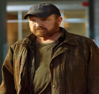
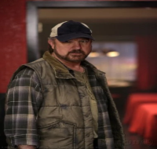
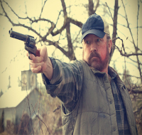

Um caçador de coisas sobrenaturais experiente, interpretado pelo ator Jim Beaver, que teve sua primeira aparição no último episódio da primeira temporada.
Bobby se tornou um caçador após ter que matar a sua própria esposa, Karen, porque ela estava possuída por um demônio.
Após alguns anos de caça, Bobby conheceu John Winchester e o ajudou a cuidar de seus dois filhos. Anos mais tarde, John desapareceu de repente e Bobby estava sempre a disposição para ajudar os garotos, pois sempre os considerou como filhos.
  